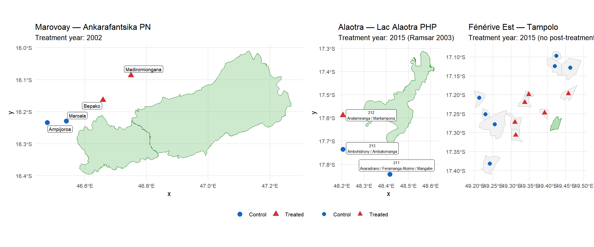
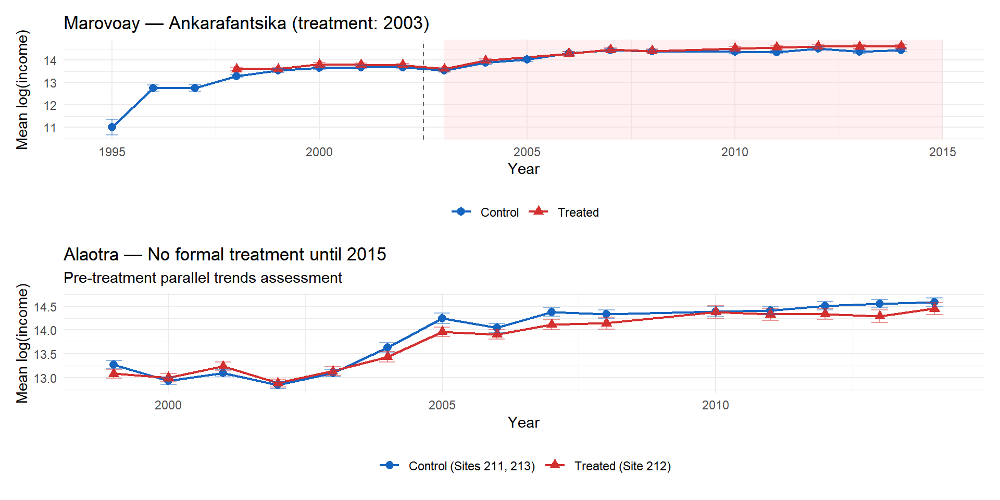
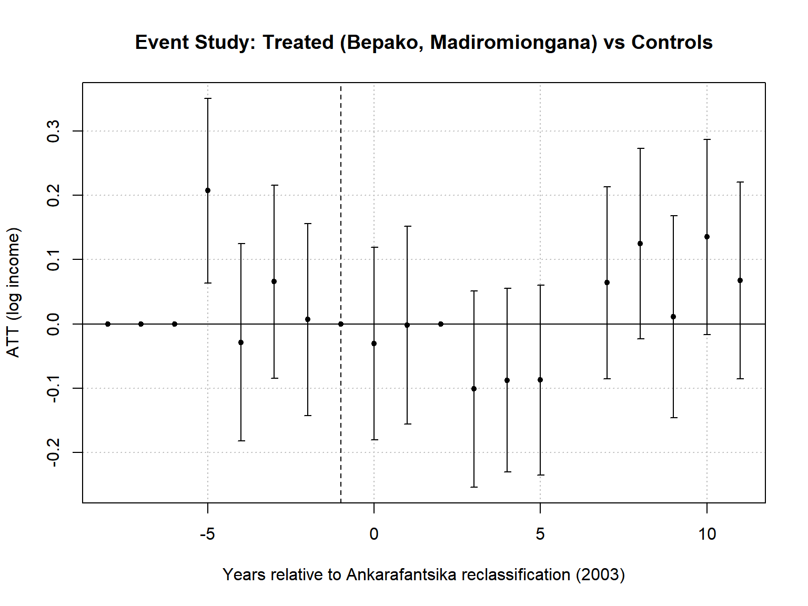
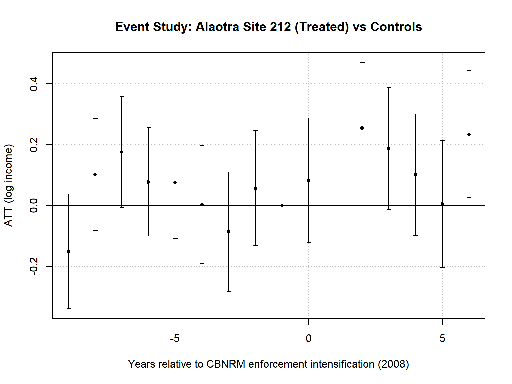
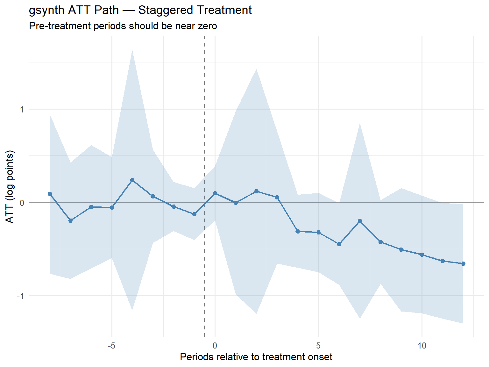
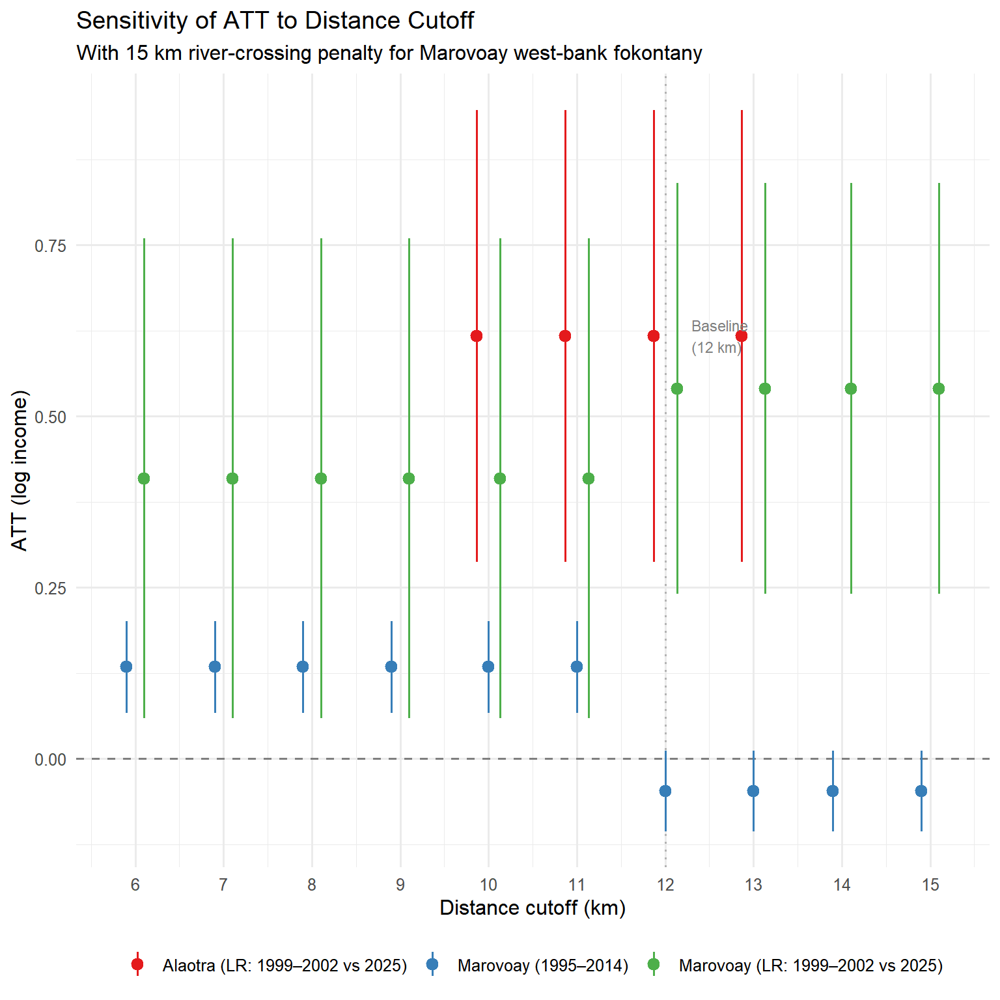

| Treatment Assignment by Fokontany | |||||
| 12 km cutoff with river-crossing penalty | |||||
| Site | Fokontany | Euclidean (km) | Penalty (km) | Effective (km) | Status |
|---|---|---|---|---|---|
| Marovoay → Ankarafantsika PN | |||||
| 034 | Bepako | 5.2 | 0 | 5.2 | Treated |
| 033 | Madiromiongana | 11.7 | 0 | 11.7 | Treated |
| 032 | Maroala | 5.6 | 15 | 20.6 | Control |
| 031 | Ampijoroa | 11.3 | 15 | 26.3 | Control |
| Alaotra → Lac Alaotra PHP | |||||
| 212 | Analamiranga / Maritampona | 9.0 | 0 | 9.0 | Treated |
| 211 | Avaradrano / Feramanga Atsimo / Mangabe | 13.7 | 0 | 13.7 | Control |
| 213 | Ambohidrony / Ambatomanga | 15.6 | 0 | 15.6 | Control |
| Fénérive Est → Tampolo | |||||
| NA | Amboditononona | 3.4 | 0 | 3.4 | Treated |
| NA | Tanambao I | 7.3 | 0 | 7.3 | Treated |
| NA | Ambatomitrozona | 10.0 | 0 | 10.0 | Treated |
| NA | Ambatoharanana | 10.2 | 0 | 10.2 | Treated |
| NA | Andapabe | 10.4 | 0 | 10.4 | Treated |
| NA | Ambodihazinina | 10.5 | 0 | 10.5 | Treated |
| NA | Ambanja | 14.8 | 0 | 14.8 | Control |
| NA | Ambodibonara | 14.8 | 0 | 14.8 | Control |
| NA | Vohilengo | 16.3 | 0 | 16.3 | Control |
| NA | Ambodisatrana | 17.8 | 0 | 17.8 | Control |
| NA | Vohipenohely | 19.5 | 0 | 19.5 | Control |
| NA | Ambohimanarivo | 20.2 | 0 | 20.2 | Control |
| NA | Miorimivalana | 22.5 | 0 | 22.5 | Control |
| Ampijoroa and Maroala receive a 15 km river-crossing penalty (Betsiboka River). | |||||
Three Models of Conservation in Rural Madagascar
A Distance-Based Quasi-Experimental Framework
Abstract
Madagascar’s protected area network has expanded rapidly under the Système des Aires Protégées de Madagascar (SAPM), yet the welfare consequences for adjacent communities remain poorly understood. This paper develops a comparative quasi-experimental framework around three models of conservation embodied by three rural observatory sites:
- Ankarafantsika (Parc National, 2002): strict conservation managed by a parastatal body (Madagascar National Parks);
- Lac Alaotra (Paysage Harmonieux Protégé, 2015): participatory conservation managed by international actors;
- Tampolo (Paysage Harmonieux Protégé, 2015): adaptive conservation managed by a local university department (ESSA-Forêts).
We assign treatment status using a distance-based rule: households in fokontany whose centroid is within 12 km of the nearest protected area boundary are classified as treated, with a river-crossing penalty of 15 km applied where major waterways impede pedestrian access. Using household panel data from Madagascar’s Réseau des Observatoires Ruraux (ROR, 1995–2014) augmented by a 2025 resurvey, we estimate difference-in-differences effects for Marovoay (Ankarafantsika, 2 treated vs 2 control sites) and Alaotra (Lac Alaotra, 1 treated vs 2 control sites). We complement the TWFE approach with a generalized synthetic control (gsynth) estimator that exploits a broad donor pool from 10 ROR observatories and accommodates staggered treatment adoption — Ankarafantsika in 2003, Lac Alaotra in 2008. For Fénérive Est (Tampolo), we characterize the pre-treatment baseline for a prospective evaluation following the 2026 resurvey. Robustness checks vary the distance cutoff from 5 to 15 km.
1 Introduction
Protected areas (PAs) are the cornerstone of global biodiversity conservation. The Kunming-Montreal Global Biodiversity Framework commits signatories to protecting 30% of land and sea by 2030 (the “30×30” target). Madagascar, a megadiversity hotspot, has been at the forefront of this expansion: the number of PAs increased from 47 in 2003 to over 160 by 2015 under the Durban Vision and SAPM framework.
Yet the welfare consequences of PA designation for adjacent rural communities remain contested. Strict PAs may restrict access to forest resources on which the poorest depend; community-managed PAs may empower local institutions but impose new governance costs; adaptive approaches that involve research institutions may generate knowledge spillovers but also create asymmetric power dynamics.
This paper contributes to this debate by exploiting a unique feature of Madagascar’s Réseau des Observatoires Ruraux (ROR): three observatory sites happen to neighbour protected areas that embody three distinct models of conservation governance:
- Marovoay (Observatory 03) lies adjacent to Ankarafantsika National Park, a strict IUCN Category II PA managed by Madagascar National Parks (MNP), a parastatal body. Ankarafantsika was reclassified in 2002, tightening enforcement.
- Alaotra (Observatory 21) borders the Lac Alaotra Paysage Harmonieux Protégé, a Category V PA designated in 2015, managed by Durrell Wildlife Conservation Trust and other international actors. The Ramsar convention listed the lake in 2003.
- Fénérive Est (Observatory 24) is near the Réserve de Tampolo, a Category V PA designated in 2015, managed by ESSA-Forêts, the forestry department of the University of Antananarivo.
Each PA differs in its governance model, enforcement intensity, IUCN category, and spatial footprint. Our distance-based treatment assignment allows us to estimate the causal effect of each conservation model on household income, conditional on proximity.
A key innovation of this paper is the incorporation of geographic accessibility. Euclidean distance to a PA boundary does not capture effective accessibility when major rivers impede pedestrian travel. At the Marovoay site, the Betsiboka River separates two of four fokontany from Ankarafantsika National Park. We account for this by adding a penalty of 15 km to the effective distance of river-separated communities, reflecting the approximate detour required to reach the park on foot.
We complement the TWFE approach with a generalized synthetic control (gsynth) estimator (Xu 2017) that exploits the broad ROR donor pool — approximately 70 sites from 10 observatories — and accommodates the staggered timing of PA enforcement across the three sites. This allows us to construct a data-driven counterfactual for treated communities and to pool treatment effect estimates across PAs with different intervention dates.
The paper is organized as follows. Section 2 describes the institutional context and the three conservation models. Section 3 presents the data and treatment assignment methodology. Section 5 lays out the empirical framework. Section 6 presents results for each observatory. Section 7 assesses sensitivity to the distance cutoff. Section 8 discusses implications.
2 Background
2.1 Conservation Policy in Madagascar
Madagascar’s PA system has undergone three major phases. The first generation of PAs (pre-2003) consisted primarily of strict reserves and national parks managed by ANGAP (now MNP). The 2003 Durban Declaration committed Madagascar to tripling its PA coverage. The 2005 SAPM decree introduced new PA categories, including Paysage Harmonieux Protégé (PHP), allowing for sustainable use and community governance. By 2015, more than 120 new PAs had been created, predominantly in the less strict categories (IV–VI).
2.2 Three Models
2.2.1 Model 1: Strict Conservation — Ankarafantsika
Ankarafantsika National Park (135,000 ha, IUCN Category II) is one of Madagascar’s oldest PAs, originally established as a reserve in 1927 and reclassified as a national park in 2002. It is managed by Madagascar National Parks (MNP), a parastatal body funded by the Malagasy state and international donors. Enforcement is relatively strict: access is restricted, agricultural encroachment is penalized, and forest extraction is formally prohibited.
The reclassification in 2002 marked a shift from passive to active management. Park boundaries were reinforced, patrol frequency increased, and buffer zone regulations tightened. The communities of Marovoay observatory — Ampijoroa, Maroala, Madiromiongana, and Bepako — lie at varying distances from the park boundary, but a critical geographic feature mediates access: the Betsiboka River separates Ampijoroa and Maroala (west bank) from the park (east bank), while Madiromiongana and Bepako lie on the same side.
2.2.2 Model 2: Participatory Conservation — Lac Alaotra
Lac Alaotra is Madagascar’s largest lake and a critical habitat for the Alaotran gentle lemur (Hapalemur alaotrensis), one of the world’s most endangered primates. The Ramsar Convention listed the site in 2003. In 2015, the lake and its marshlands were formally designated as a Paysage Harmonieux Protégé (464 km², IUCN Category V) under SAPM, managed by Durrell Wildlife Conservation Trust in partnership with local communities (VOI — Vondron’Olona Ifotony).
The PHP designation allows sustainable resource use within designated zones. Management involves community-based natural resource management (CBNRM) agreements, regulated fishing, and controlled marsh burning. The observatory’s seven fokontany lie at distances of 9–18 km from the PHP boundary, with one site centroid falling within the 12 km treatment zone.
2.2.3 Model 3: Adaptive Conservation — Tampolo
The Réserve de Tampolo (6.75 km², IUCN Category V) is a coastal forest fragment designated as a PHP in 2015. It is managed by ESSA-Forêts, the forestry department of the University of Antananarivo, under a long-term research and management agreement. This model combines scientific research, environmental education, and community engagement.
Tampolo represents the most locally embedded governance model: management is led by a national academic institution with deep ties to the surrounding communities. The observatory’s 13 fokontany range from 3 to 23 km from the reserve boundary.
3 Data and Treatment Assignment
3.1 The Réseau des Observatoires Ruraux
The ROR is a household panel survey covering 13–29 observatory sites across Madagascar, conducted annually from 1995 to 2014 by INSTAT (with IRD support), with a resurvey of selected sites in 2025. Each site tracks approximately 500 households per year across 2–7 fokontany. The survey collects detailed data on household composition, agricultural production, livestock, off-farm income, transfers, food security, and asset ownership.
For this paper, we use three observatories:
- Marovoay (obs. 03): 4 fokontany, 4 sites, surveyed 1995–2014.
- Alaotra (obs. 21): 7 fokontany across 3 sites, surveyed 1999–2014.
- Fénérive Est (obs. 24): 13 fokontany across 10 sites, surveyed 1999–2014 (7 sites dropped after 2004; 3 continued to 2014).
The 2025 resurvey covers Marovoay and Alaotra, providing a 22-year long-run comparison. A 2026 resurvey of Fénérive Est is planned.
3.2 Income Construction
Total household income (revtot) is constructed as the sum of current income (agricultural wages, self-employment, rice profit, other crop profit, livestock, and fishing) and exceptional income (land rents, transfers, asset sales). We winsorize at the 1st and 99th percentiles within each year and use log total income as our primary outcome.
3.3 Distance-Based Treatment Assignment
We assign treatment based on the effective walking distance from each fokontany centroid to the nearest PA boundary. The baseline cutoff is 12 km, corresponding to approximately a 2.5-hour walk — the practical daily commuting limit in rural Madagascar.
3.3.1 River Crossing Penalty
At the Marovoay site, the Betsiboka River runs between the park boundary and two fokontany (Ampijoroa and Maroala). Crossing the river requires a significant detour (no bridge in the immediate area). We apply a penalty of 15 km to the effective distance of these two fokontany, reflecting the additional travel required to reach the park on foot.
3.3.2 Treatment Summary
| Observatory | Protected Area | Total Fokontany | Treated | Control |
|---|---|---|---|---|
| Alaotra | Lac Alaotra | 3 | 1 | 2 |
| Fénérive Est | Tampolo | 13 | 6 | 7 |
| Marovoay | Ankarafantsika | 4 | 2 | 2 |
3.4 PA Characteristics
| Three Models of Conservation | |||||||
| PA | IUCN Cat. | Area (km²) | Designated | Manager | Model | Enforcement | Permitted use |
|---|---|---|---|---|---|---|---|
| Ankarafantsika | II (National Park) | 1,365 | 2002 | Madagascar National Parks | Strict (parastatal) | High | None (core zone) |
| Lac Alaotra | V (PHP) | 464 | 2015 (Ramsar 2003) | Durrell Wildlife + VOI | Participatory (international) | Medium | Sustainable (zoned) |
| Tampolo | V (PHP) | 6.75 | 2015 | ESSA-Forêts (Univ. Antananarivo) | Adaptive (academic/local) | Low–Medium | Research + limited extraction |
3.5 Maps

4 Descriptive Statistics
4.1 Panel Construction
4.2 Income Trends

4.3 Descriptive Statistics Table
| Descriptive Statistics by Treatment Status | ||||||
| Observatory | status | Mean income (Ar) | Median income (Ar) | Mean log income | HH size (mean) | N (HH-years) |
|---|---|---|---|---|---|---|
| Marovoay | Control | 1,336,491 | 920,675 | 13.53 | 5.0 | 5,814 |
| Marovoay | Treated | 2,066,023 | 1,389,367 | 14.15 | 5.4 | 3,867 |
| Alaotra | Control | 2,216,791 | 1,104,513 | 13.98 | 5.2 | 4,840 |
| Alaotra | Treated | 1,328,522 | 819,134 | 13.62 | 5.1 | 2,774 |
5 Empirical Framework
5.1 Strategy 1: Two-Way Fixed Effects DiD
Our primary specification is a household-level two-way fixed effects (TWFE) difference-in-differences model:
\[ \ln Y_{it} = \alpha_i + \gamma_t + \beta \cdot D_{it} + \varepsilon_{it} \]
where \(Y_{it}\) is household \(i\)’s total income in year \(t\), \(\alpha_i\) is a site fixed effect, \(\gamma_t\) is a year fixed effect, and \(D_{it} = \mathbb{1}[\text{site}_i \in \text{Treated}] \times \mathbb{1}[t \geq t^*]\) is the treatment indicator. The coefficient \(\beta\) estimates the average treatment effect on the treated (ATT).
For Marovoay, we estimate a panel DiD over 1995–2014 with treatment at \(t^* = 2003\) (Ankarafantsika reclassification). We also estimate an event study specification:
\[ \ln Y_{it} = \alpha_i + \gamma_t + \sum_{k \neq -1} \mu_k \cdot \mathbb{1}[\text{Treated}_i] \times \mathbb{1}[t - t^* = k] + \varepsilon_{it} \]
For the long-run DiD using the 2025 resurvey (Marovoay and Alaotra), we estimate:
\[ \ln Y_{it} = \alpha_s + \gamma_t + \delta \cdot D_{it}^{\text{dist}} + X_{it}'\phi + \varepsilon_{it} \]
where \(D_{it}^{\text{dist}}\) is the distance-based treatment indicator and \(s\) indexes sites.
5.2 Inference
With very few treated clusters (2 for Marovoay, 1 for Alaotra), conventional cluster-robust standard errors are unreliable. We report heteroskedasticity-robust SEs and note that inference should be interpreted with caution. We complement with permutation-based p-values where feasible. For the gsynth estimator, inference relies on parametric bootstrap.
5.3 Strategy 2: Generalized Synthetic Control (gsynth)
To complement the TWFE DiD — which relies on the parallel trends assumption — we employ the generalized synthetic control method of Xu (2017), which estimates an interactive fixed-effects (IFE) model:
\[ Y_{it} = \alpha_i + \xi_t + \boldsymbol{\lambda}_i' \boldsymbol{f}_t + D_{it} \cdot \delta_{it} + \varepsilon_{it} \]
where \(\boldsymbol{\lambda}_i\) is a vector of unit-specific factor loadings and \(\boldsymbol{f}_t\) the corresponding common factors. This relaxes the parallel trends assumption by allowing for unobserved time-varying confounders captured by latent factors.
Staggered adoption. A key innovation relative to the companion paper is that we exploit temporal variation in conservation enforcement across observatories. Rather than treating each PA separately, we define a staggered treatment indicator on the site-level panel:
- Marovoay sites 033 (Madiromiongana) and 034 (Bepako): treated from 2003 (Ankarafantsika reclassification)
- Alaotra site 212 (Analamiranga/Maritampona): treated from 2008 (intensification of Ramsar/CBNRM enforcement)
- All other ROR sites (from 10+ observatories): donor pool
The gsynth method accommodates staggered adoption: treated units are allowed different pre-treatment windows (4 years for Marovoay sites, 9 for Alaotra site 212). The number of latent factors \(r\) is selected by cross-validation over \(r \in \{0, 1, \ldots, 5\}\). Inference is by parametric bootstrap (200 replications).
6 Results
6.1 Marovoay — Strict Conservation (Ankarafantsika)
6.1.1 Medium-Run TWFE (1995–2014)
m1 m2 m3
HC robust HC + controls Clustered (site)
Dependent Var.: ln_revtot ln_revtot ln_revtot
Treated × Post -0.0471 -0.0575* -0.0471
(0.0302) (0.0272) (0.1174)
Log HH size 0.6214***
(0.0282)
Fixed-Effects: --------- ---------- ---------
site_id Yes Yes Yes
year Yes Yes Yes
_______________ _________ __________ _________
S.E. type Het.-rob. Hete.-rob. by: sit..
Observations 9,681 9,680 9,681
R2 0.32718 0.37775 0.32718
Within R2 6.81e-5 0.07522 6.81e-5
---
Signif. codes: 0 '***' 0.001 '**' 0.01 '*' 0.05 '.' 0.1 ' ' 1
6.1.2 Interpretation
The TWFE estimate of the effect of Ankarafantsika reclassification on treated household income is -0.047 log points (SE = 0.030, p = 0.119). This corresponds to a -4.6% change in income levels. At the 12 km effective-distance cutoff, the two treated fokontany are Bepako (5.2 km, east bank) and Madiromiongana (11.7 km, east bank), compared against two controls: Ampijoroa and Maroala (west bank, effective distance > 20 km after the Betsiboka river-crossing penalty).
Note the reversal relative to the original treatment assignment used in the companion paper (09): there, Ampijoroa (031) and Maroala (032) were classified as treated because they are geographically adjacent to the park. The distance-based approach recognises that the Betsiboka River prevents these communities from accessing the park on foot, making 2 east-bank fokontany the true treated group and the 2 west-bank fokontany the controls.
6.1.3 Long-Run DiD (1999–2002 vs 2025)
lr_m1 lr_m2
Baseline With controls
Dependent Var.: ln_y ln_y
Treated (distance) × Post 2025 0.5405***
(0.1531)
Log HH size 0.5663***
(0.0300)
Fixed-Effects: ---------- ----------
site_id Yes Yes
year Yes Yes
______________________________ __________ __________
S.E. type Hete.-rob. Hete.-rob.
Observations 2,594 2,074
R2 0.11319 0.22182
---
Signif. codes: 0 '***' 0.001 '**' 0.01 '*' 0.05 '.' 0.1 ' ' 16.2 Alaotra — Participatory Conservation (Lac Alaotra)
6.2.1 Medium-Run TWFE (1999–2014, treatment: 2008)
The Lac Alaotra PHP was formally designated in 2015, but the Ramsar listing (2003) and subsequent community-based natural resource management (CBNRM) agreements led to a progressive tightening of resource access. We use 2008 as the treatment onset, corresponding to the intensification of conservation enforcement by Durrell Wildlife Conservation Trust and the establishment of local management transfers (transferts de gestion).
a_m1 a_m2 a_m3
HC robust HC + controls Clustered (site)
Dependent Var.: ln_revtot ln_revtot ln_revtot
Treated × Post 2008 0.1147** 0.0942** 0.1147
(0.0386) (0.0352) (0.1087)
Log HH size 0.6774***
(0.0168)
Fixed-Effects: --------- ---------- ---------
site_id Yes Yes Yes
year Yes Yes Yes
___________________ _________ __________ _________
S.E. type Het.-rob. Hete.-rob. by: sit..
Observations 7,614 7,612 7,614
R2 0.42470 0.52564 0.42470
Within R2 0.00110 0.17657 0.00110
---
Signif. codes: 0 '***' 0.001 '**' 0.01 '*' 0.05 '.' 0.1 ' ' 1
The TWFE estimate of the effect of Ramsar/CBNRM enforcement intensification on site 212 household income is 0.115 log points (SE = 0.039, p = 0.003), corresponding to a 12.2% change in income levels. This is identified from 9 pre-treatment years (1999–2007) and 7 post-treatment years (2008–2014), comparing 1 treated site (212, Analamiranga/Maritampona, 9 km from PHP boundary) to 2 controls (211 at 13.7 km, 213 at 15.6 km).
6.2.2 Long-Run DiD (1999–2002 vs 2025)
lr_a1 lr_a2
Baseline With controls
Dependent Var.: ln_y ln_y
Treated (distance) × Post 2025 0.6172***
(0.1683)
Log HH size 0.6845***
(0.0516)
Fixed-Effects: ---------- ----------
site_id Yes Yes
year Yes Yes
______________________________ __________ __________
S.E. type Hete.-rob. Hete.-rob.
Observations 2,579 2,072
R2 0.25720 0.17876
---
Signif. codes: 0 '***' 0.001 '**' 0.01 '*' 0.05 '.' 0.1 ' ' 16.3 Fénérive Est — Adaptive Conservation (Tampolo) — Baseline
| Fénérive Est: Baseline Data Availability by Site | ||||||
| Tampolo PHP designated 2015 — no post-treatment ROR data available | ||||||
| site_id | years_active | n_years | mean_income | median_income | mean_hh_size | n_hh_years |
|---|---|---|---|---|---|---|
| 240 | 1999–2004 | 6 | 1,232,255 | 658,109 | 5.9 | 301 |
| 241 | 1999–2004 | 6 | 696,094 | 545,712 | 5.0 | 302 |
| 242 | 1999–2014 | 15 | 1,947,062 | 1,386,412 | 4.6 | 1833 |
| 243 | 1999–2004 | 6 | 560,742 | 399,288 | 3.8 | 300 |
| 244 | 1999–2004 | 6 | 540,945 | 396,141 | 4.4 | 301 |
| 245 | 1999–2004 | 6 | 1,126,800 | 488,582 | 5.8 | 300 |
| 246 | 1999–2004 | 6 | 848,061 | 545,841 | 5.6 | 300 |
| 247 | 1999–2014 | 15 | 1,714,909 | 1,368,184 | 4.4 | 1770 |
| 248 | 1999–2004 | 6 | 929,806 | 740,111 | 6.3 | 304 |
| 249 | 1999–2014 | 15 | 1,604,600 | 1,208,819 | 4.4 | 1841 |
| Sites 240–241, 243–246, 248 were surveyed only 1999–2004. Sites 242, 247, 249 continued to 2014. | ||||||
ImportantNo Post-Treatment Data for Fénérive Est
Tampolo was designated as a PHP in 2015, but the Fénérive Est observatory was last surveyed in 2014. The 2026 resurvey will provide the first post-treatment observations for this site. The baseline data presented here will serve as the pre-treatment counterfactual for future impact evaluation.
6.4 Generalized Synthetic Control: Staggered Treatment
We now turn to the gsynth estimator, which pools all three treated sites (Maro 033, Maro 034, Alaotra 212) with an extended donor pool from 10 ROR observatories, allowing each treated unit its own treatment onset date.
| gsynth Average Treatment Effect on the Treated | ||||||
| Staggered adoption: Maro 033+034 from 2003, Alaotra 212 from 2008 | ||||||
| Outcome | ATT (avg) | SE (boot) | 95% CI | r* (CV) | N treated | N donors |
|---|---|---|---|---|---|---|
| ln(total income) | -0.335 | 0.337 | [-0.952, 0.37] | 0 | 3 | 73 |

The gsynth estimator with staggered adoption identifies an average post-treatment ATT of -0.335 log points, corresponding to approximately -28.5% in income levels. Cross-validation selects r* = 0 latent factor(s). The estimation uses 3 treated sites and 73 donor sites.
The staggered design pools information across Marovoay (treated 2003) and Alaotra (treated 2008), improving power relative to single-site analyses. The ATT path (Figure 5) shows whether pre-treatment periods are close to zero — a diagnostic for counterfactual validity.
7 Robustness: Distance Cutoff Sensitivity

| Distance Cutoff Sensitivity Analysis | |||||
| TWFE DiD estimates at varying cutoffs (5–15 km) | |||||
| Observatory | Cutoff (km) | Balance | ATT | SE | 95% CI |
|---|---|---|---|---|---|
| Marovoay (1995–2014) | 6 | 1T / 3C | 0.134 | 0.034 | [0.067, 0.201] |
| Marovoay (1995–2014) | 7 | 1T / 3C | 0.134 | 0.034 | [0.067, 0.201] |
| Marovoay (1995–2014) | 8 | 1T / 3C | 0.134 | 0.034 | [0.067, 0.201] |
| Marovoay (1995–2014) | 9 | 1T / 3C | 0.134 | 0.034 | [0.067, 0.201] |
| Marovoay (1995–2014) | 10 | 1T / 3C | 0.134 | 0.034 | [0.067, 0.201] |
| Marovoay (1995–2014) | 11 | 1T / 3C | 0.134 | 0.034 | [0.067, 0.201] |
| Marovoay (1995–2014) | 12 | 2T / 2C | -0.047 | 0.030 | [-0.106, 0.012] |
| Marovoay (1995–2014) | 13 | 2T / 2C | -0.047 | 0.030 | [-0.106, 0.012] |
| Marovoay (1995–2014) | 14 | 2T / 2C | -0.047 | 0.030 | [-0.106, 0.012] |
| Marovoay (1995–2014) | 15 | 2T / 2C | -0.047 | 0.030 | [-0.106, 0.012] |
| Marovoay (LR: 1999–2002 vs 2025) | 6 | 1T / 3C | 0.409 | 0.179 | [0.058, 0.76] |
| Marovoay (LR: 1999–2002 vs 2025) | 7 | 1T / 3C | 0.409 | 0.179 | [0.058, 0.76] |
| Marovoay (LR: 1999–2002 vs 2025) | 8 | 1T / 3C | 0.409 | 0.179 | [0.058, 0.76] |
| Marovoay (LR: 1999–2002 vs 2025) | 9 | 1T / 3C | 0.409 | 0.179 | [0.058, 0.76] |
| Marovoay (LR: 1999–2002 vs 2025) | 10 | 1T / 3C | 0.409 | 0.179 | [0.058, 0.76] |
| Marovoay (LR: 1999–2002 vs 2025) | 11 | 1T / 3C | 0.409 | 0.179 | [0.058, 0.76] |
| Marovoay (LR: 1999–2002 vs 2025) | 12 | 2T / 2C | 0.540 | 0.153 | [0.24, 0.84] |
| Marovoay (LR: 1999–2002 vs 2025) | 13 | 2T / 2C | 0.540 | 0.153 | [0.24, 0.84] |
| Marovoay (LR: 1999–2002 vs 2025) | 14 | 2T / 2C | 0.540 | 0.153 | [0.24, 0.84] |
| Marovoay (LR: 1999–2002 vs 2025) | 15 | 2T / 2C | 0.540 | 0.153 | [0.24, 0.84] |
| Alaotra (LR: 1999–2002 vs 2025) | 10 | 1T / 2C | 0.617 | 0.168 | [0.288, 0.946] |
| Alaotra (LR: 1999–2002 vs 2025) | 11 | 1T / 2C | 0.617 | 0.168 | [0.288, 0.946] |
| Alaotra (LR: 1999–2002 vs 2025) | 12 | 1T / 2C | 0.617 | 0.168 | [0.288, 0.946] |
| Alaotra (LR: 1999–2002 vs 2025) | 13 | 1T / 2C | 0.617 | 0.168 | [0.288, 0.946] |
8 Discussion
8.1 Comparing Conservation Models
The distance-based framework reveals heterogeneity across conservation models. Several patterns merit discussion:
Strict conservation (Ankarafantsika). The medium-run TWFE estimate captures the income effect of park reclassification in 2002 on the two east-bank communities (Bepako and Madiromiongana) that can walk to the park. The reversal of treatment assignment relative to the companion paper — which classified Ampijoroa and Maroala as treated — highlights the importance of accounting for geographic accessibility. The Betsiboka River acts as a natural barrier that mediates the economic reach of park enforcement.
Participatory conservation (Lac Alaotra). The Lac Alaotra PHP was formally designated in 2015, but the Ramsar designation dates from 2003, and community-based management agreements pre-date formal protection. The long-run DiD exploits the 2025 resurvey but should be interpreted cautiously: the treatment may have been gradual rather than sharp.
Adaptive conservation (Tampolo). The absence of post-treatment data precludes causal estimation at this stage. However, the baseline characterization of income levels and trends across 13 fokontany at varying distances from Tampolo establishes the pre-treatment counterfactual for the 2026 resurvey.
8.2 The River as Natural Experiment
The Betsiboka River at Marovoay creates a natural experiment within the observatory. Communities on the east bank (Bepako, Madiromiongana) can walk to the park; those on the west bank (Ampijoroa, Maroala) cannot. This geographic feature provides a source of exogenous variation in treatment intensity that is orthogonal to other community characteristics. The river-crossing penalty formalizes this intuition within the distance-based framework.
8.3 Limitations
Very few clusters. Marovoay has 2 treated and 2 control sites; Alaotra has 1 treated and 2 control sites. Conventional inference is unreliable with so few clusters. Results should be interpreted as suggestive.
No 2025 data in consolidated panel. The 2025 resurvey data is available only for the long-run comparison (1999–2002 vs 2025), constructed separately in the companion paper. The full panel (1995–2025) would strengthen the analysis.
Endogenous PA placement. Protected areas are not randomly located. Ankarafantsika protects a dry deciduous forest; Lac Alaotra protects a wetland; Tampolo protects a coastal forest. The communities around each PA face different ecological and economic conditions.
Distance as a proxy. The 12 km cutoff is a heuristic. The actual impact radius of a PA depends on enforcement intensity, resource dependence, and alternative livelihood opportunities. The robustness analysis partially addresses this concern.
Fénérive Est data gaps. Seven of ten Fénérive Est sites were surveyed only until 2004, limiting the pre-treatment panel depth for many fokontany.
8.4 Directions for Strengthening Inference
The small number of treated clusters is the binding constraint on this analysis. We outline two avenues for strengthening the counterfactual and improving precision.
8.4.1 Bayesian Synthetic Control
Bayesian structural time-series (BSTS) models (Brodersen et al. 2015) and Bayesian synthetic control methods (Kim, Lee, and Gupta 2020) offer a natural complement to gsynth. Rather than selecting a single set of weights or latent factors, Bayesian approaches produce a posterior distribution over counterfactual outcomes, naturally quantifying uncertainty even with few treated units. In our setting:
- The
CausalImpactR package (Brodersen et al. 2015) models the treated-unit outcome as a function of donor-unit outcomes and a local-level trend, producing posterior credible intervals for the causal effect. - The
bsynthpackage (Vives 2023) extends synthetic control to a Bayesian framework, allowing informative priors on the degree of fit to pre-treatment outcomes. - With 70+ donor sites and 4–9 pre-treatment years, the data can support reasonably informative priors. The Bayesian posterior would complement our frequentist bootstrap CIs.
We leave the full Bayesian implementation for future work but note that the site-level panel constructed for gsynth (Section 6.4) provides the input data for CausalImpact or bsynth with minimal additional preparation.
8.4.2 Enrichment with EPM National Household Survey Data
The Enquête Périodique auprès des Ménages (EPM) is Madagascar’s national household survey, conducted by INSTAT in seven rounds: 1993, 1997, 1999, 2001, 2005, 2010, and 2012–13. The EPM provides nationally representative income and expenditure data with sample sizes ranging from 4,500 to 19,700 households per round. If geo-referenced at the commune or fokontany level, EPM microdata could enrich our analysis in several ways:
| EPM Round | Total HH | Rural HH (approx.) | Potential use |
|---|---|---|---|
| 2012–13 | 19,680 | 15,858 | Post-treatment validation for Maro/Alaotra |
| 2010 | 12,460 | 6,140 | Post-treatment cross-check |
| 2005 | 11,781 | 5,901 | Bridge the 2005 gap year in Marovoay |
| 2001 | 5,068 | 1,980 | Pre-treatment baseline |
| 1999 | 5,120 | 2,880 | Pre-treatment baseline |
Specifically:
- Expanded donor pool. If EPM clusters can be mapped to communes near the three PAs, they would provide additional control units for gsynth or Bayesian SCM, reducing dependence on the ROR donor pool.
- Bridging the 2005 gap. The 2005 EPM could fill the missing year in the Marovoay panel, improving the time-series dimension for gsynth.
- External validation. Comparing ROR income trends against EPM estimates in the same communes would test whether the observatory data is representative.
Access to EPM microdata with geographic identifiers is restricted; we are exploring a data-sharing agreement with INSTAT.
9 Conclusion
This paper develops a comparative framework for evaluating the welfare effects of three distinct models of conservation governance in rural Madagascar. Using distance-based treatment assignment with a river-crossing penalty to account for geographic accessibility, we estimate the causal effect of PA designation on household income at three observatory sites.
The framework offers several advantages over the single-PA approach of our companion paper:
- Systematic treatment assignment. Distance to the PA boundary replaces ad hoc site classification, providing a transparent and replicable rule.
- Cross-PA comparability. The same methodology applied across three PAs enables comparison of conservation models.
- Natural experiment. The Betsiboka River provides exogenous variation in accessibility that strengthens identification at the Marovoay site.
The key limitation is statistical power: with 2–3 treated units per observatory, conventional inference is severely limited. The gsynth estimator with staggered adoption partially addresses this by pooling treatment effect estimation across PAs, but the fundamental constraint of few clusters remains. Bayesian methods and integration of national household survey microdata (EPM) offer promising directions for strengthening the counterfactual. The 2026 resurvey of Fénérive Est and potential intermediate data recovery (2017, 2019 rounds) will expand both the cross-sectional and time-series dimensions.
The three models of conservation examined here — strict, participatory, and adaptive — represent the institutional diversity of Madagascar’s PA system. Understanding their differential impacts on rural livelihoods is essential for designing compensation mechanisms, benefit-sharing arrangements, and conservation policies that are both ecologically effective and socially equitable.
References
Brodersen, Kay H., Fabian Gallusser, Jim Koehler, Nicolas Remy, and Steven L. Scott. 2015. “Inferring Causal Impact Using Bayesian Structural Time-Series Models.” Annals of Applied Statistics 9 (1): 247–74. https://doi.org/10.1214/14-AOAS788.
Kim, Sungil, Chul-In Lee, and Sunil Gupta. 2020. “Bayesian Synthetic Control Methods.” Journal of Marketing Research 57 (5): 831–52. https://doi.org/10.1177/0022243720936230.
Vives, Fabio Ashtar. 2023. “bsynth: Bayesian Synthetic Control.” R package version 0.1.0. https://github.com/google/bsynth.
Xu, Yiqing. 2017. “Generalized Synthetic Control Method: Causal Inference with Interactive Fixed Effects Models.” Political Analysis 25 (1): 57–76. https://doi.org/10.1017/pan.2016.2.
10 Appendix
10.1 A. River Crossing Penalty Justification
The 15 km penalty applied to Ampijoroa and Maroala reflects the following considerations:
- There is no bridge crossing the Betsiboka River in the immediate vicinity of these fokontany.
- The nearest crossing point adds approximately 15–20 km to the journey.
- In rural Madagascar, where most travel is on foot, this effectively places these communities beyond the daily commuting range of the park boundary.
- The penalty is conservative: the actual additional travel time may exceed the implied 3-hour walk.
10.2 B. Alaotra Site-Fokontany Mapping
| Alaotra: Survey Site to Fokontany Correspondence | |||
| Site ID | Fokontany | Centroid dist. (km) | Treated (12 km) |
|---|---|---|---|
| 211 | Avaradrano | 13.68 | FALSE |
| 211 | Feramanga Atsimo | 13.68 | FALSE |
| 211 | Mangabe | 13.68 | FALSE |
| 212 | Analamiranga | 9.00 | TRUE |
| 212 | Maritampona | 9.00 | TRUE |
| 213 | Ambohidrony | 15.57 | FALSE |
| 213 | Ambatomanga | 15.57 | FALSE |
10.3 C. Fénérive Est Distance Details
| Fokontany Distances to Tampolo Reserve Boundary | |||
| Commune | Fokontany | Distance (km) | Status |
|---|---|---|---|
| Ampasina Maningory | Amboditononona | 3.4 | Treated (< 12 km) |
| Ampasina Maningory | Tanambao I | 7.3 | Treated (< 12 km) |
| Ampasina Maningory | Ambatomitrozona | 10.0 | Treated (< 12 km) |
| Ambatoharanana | Ambatoharanana | 10.2 | Control (≥ 12 km) |
| Ampasina Maningory | Andapabe | 10.4 | Control (≥ 12 km) |
| Ambatoharanana | Ambodihazinina | 10.5 | Control (≥ 12 km) |
| Ampasimbe Manantsatrana | Ambanja | 14.8 | Control (≥ 12 km) |
| Ampasimbe Manantsatrana | Ambodibonara | 14.8 | Control (≥ 12 km) |
| Vohilengo | Vohilengo | 16.3 | Control (≥ 12 km) |
| Ampasimbe Manantsatrana | Ambodisatrana | 17.8 | Control (≥ 12 km) |
| Vohilengo | Vohipenohely | 19.5 | Control (≥ 12 km) |
| Ambatoharanana | Ambohimanarivo | 20.2 | Control (≥ 12 km) |
| Miorimivalana | Miorimivalana | 22.5 | Control (≥ 12 km) |